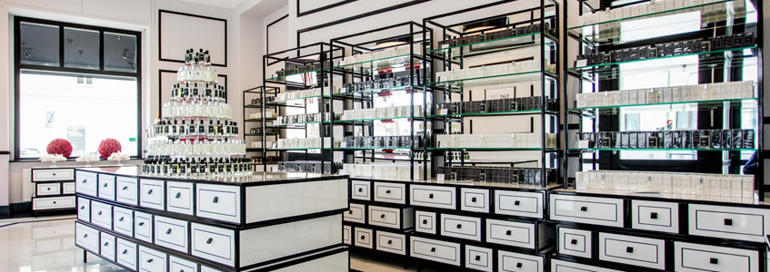

Quem somos?

FM WORLD é líder global em Marketing Multinível. A empresa foi criada em 2004 pelo Sr. Artur Trawiński. Após apenas 3 anos de atividade empresarial, iniciamos a expansão internacional e hoje temos mais de 1 milhão de Parceiros de Negócios trabalhando conosco em todo o mundo.
Muitos anos no mercado resultaram em produtos de alta qualidade para o uso diário e sistema de remuneração atraente e transparente.
Temos ousadia e coragem para mudar o mundo para melhor. É por isso que demos mais um passo em frente e estabelecemos a distribuição FM WORLD!
A Distribuição FM WORLD é uma resposta às necessidades das pessoas em todo o mundo que não tiveram acesso aos produtos FM WORLD. Graças à Distribuição FM WORLD, podemos vender e enviar produtos para todos os outros locais onde a FM WORLD não tem filiais. A partir de hoje, atendemos Parceiros de Negócios em quase 100 mercados diferentes. Assim, nos tornamos uma das empresas de MLM mais ativas do mundo
A Distribuição FM WORLD também abre uma nova forma de patrocínio - os Parceiros de Negócios poderão convidar para a cooperação pessoas de mercados onde esta atividade não foi possível. Novas pessoas passarão a fazer parte do FM WORLD e os pontos por elas alcançados serão somados ao faturamento do grupo e ao Global Point Turnover.
